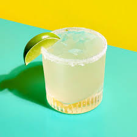

Margarita

A classic cocktail
Easy to make cocktail to please any guest this summer!
Ingredients
- 2 fluid ounces of white tequila
- 1 1/2 fluid ounces of triple sec
- 1 fluid ounce of freshly squeezed lime juice
- 1 teaspoon of coarse sea salt
- 1 lime wedge
Instructions
- Moisten the rim of a glass with a lime wedge. Sprinkle salt onto a plate. Lightly dip the moistened rim into the salt.
- Place a large ice cube in the glass and freeze the prepared glass until ready to serve.
- Fill a cocktail shaker with fresh ice. Add tequila, triple sec, and lime juice. Cover and shake vigorously until the outside of the shaker has frosted.
- Strain margarita into the chilled glass and garnish with a slice of lime.